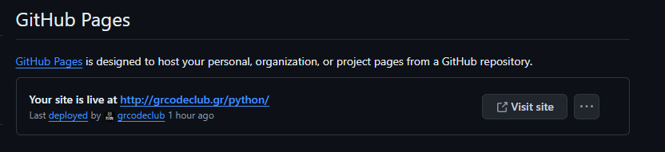

Όλα τα αρχεία από το www.grcodeclub.gr είναι αποθηκευμένα στο GitHub. Συγκεκριμένα αξoιoπησαμε την λειτουργεία GitHub Page.
Για βασικό repo δώσαμε ως όνομα grcodeclub.github.io το οποίο είναι και το link για να πηγαίνει κάποιος στο website.
Ορίζοντας σε ένα repo ως όνομα, το URL που θα έχεις για να βλέπουν ως λογαριασμός στο GitHub, αυτόματος ορίζεται να φορτώνεται αυτόματα το συγκεκριμένο repo. (Αν δεν έχεις ορίσει στο URL κάποιο άλλο repo)
Το URL που έχει κάθε λογαριασμός είναι username.github.io
URL ενός repo username.github.io/name_repo
Σε κάθε repo πηγαίνοντας Settings ⇒ Pages, ενεργοποιούσαμε την Page λειτουργεία.
Ορίζοντας το /root , δηλώναμε ότι αρχεία υπάρχουν από τον αρχικό φάκελο (root) αφορούν το website.
Ορίζοντας το /docs, δηλώναμε ότι αρχεία υπάρχουν από τον φάκελο docs αφορούν το website. Ορίζοντας το docs, μας βοηθούσε στην καλύτερη οργάνωση στα repo που θάλαμε να βρίσκονται αρχεία κώδικα με την αντίστοιχη Γλώσσα Προγραμματισμού, όταν κάποιος επισκεπτόταν τον GitHub μας.
Στο repo grcodeclub.github.io , εισήγαμε το domain grcodeclub.gr
Στην σελίδα https://github.com/settings/pages εισήγαμε το Domain που αγοράσαμε, έτσι ώστε να χρησιμοποιούμε το grcodeclub.gr αντί για grcodeclub.github.io